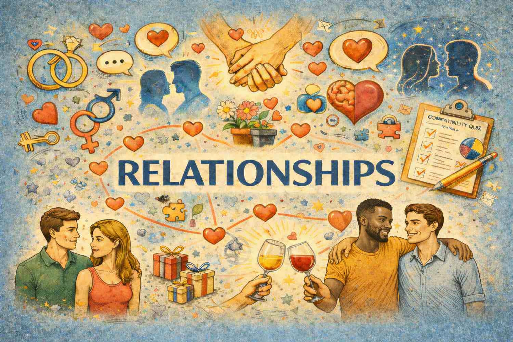
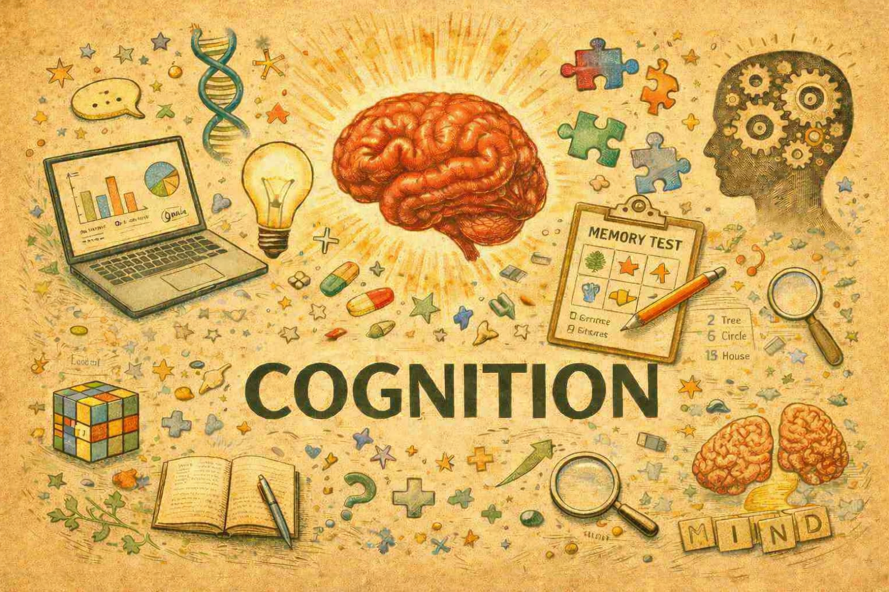
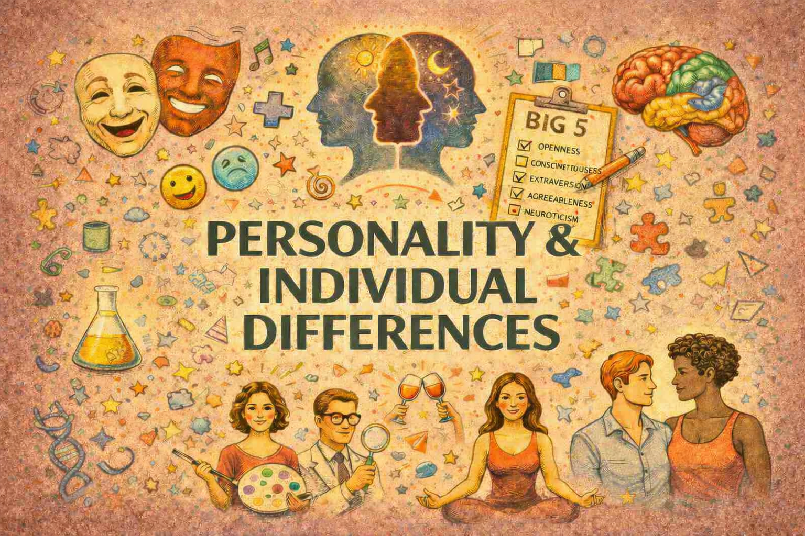

Beyond the evolution vs. learning fallacy
Levels of analysis and explanatory progress in psychology: Integrating frameworks from biology and cognitive science for a more comprehensive science of the mind
Error Management Theory and biased first impressions: How do people perceive potential mates under conditions of uncertainty?
The Products of Evolution: Conceptual Distinctions, Evidentiary Criteria, and Empirical Examples
Epistemic vigilance in early ontogeny: Children’s use of nonverbal behavior to detect deception
Context, environment, and learning in evolutionary psychology
13 Misunderstandings about Natural Selection
Evolutionary Psychology: A How-To Guide
Constraints on natural selection
Evolutionary personality psychology
Error Management Theory and the Evolution of Cognitive Bias
The Handicap Principle

In obsessive-compulsive disorder, autogenous and reactive obsessions are differentiated by disgust and mating strategies
Nanoassemblies from the aqueous extract of roasted coffee beans modulate the behavioral and molecular effects of smoking withdrawal–induced anxiety in female rats
Positive schizotypy predicts migration intentions and desires
Why do people (not) engage in social distancing? Proximate and ultimate analyses of norm-following during the COVID-19 pandemic
A preliminary study on the role of personal history of infectious and parasitic diseases on self-reported health across countries [90-country study]
I see sick people: Beliefs about sensory detection of infectious disease are largely consistent across cultures [58-country study]
Grandiose narcissism, unfounded beliefs, and behavioral reactions during the COVID-19 pandemic [61-country study]
Agentic collective narcissism and communal collective narcissism: Do they predict Covid-19 pandemic-related beliefs and behaviors? [61-country study]
The fear of COVID-19 scale: its structure and measurement invariance across 48 countries

A preliminary study on the role of personal history of infectious and parasitic diseases on self-reported health across countries [90-country study]
I see sick people: Beliefs about sensory detection of infectious disease are largely consistent across cultures [58-country study]
Grandiose narcissism, unfounded beliefs, and behavioral reactions during the COVID-19 pandemic [61-country study]
Agentic collective narcissism and communal collective narcissism: Do they predict Covid-19 pandemic-related beliefs and behaviors? [61-country study]
A worldwide test of the predictive validity of ideal partner preference-matching [43-country study]
Experimental and cross-cultural evidence that parenthood and parental care motives increase social conservatism [10-country study and 88-country study]
Fundamental social motives measured across forty-two cultures in two waves [42-country study]
Family still matters: Human social motivation during a global pandemic [42-country study]
Predictors of enhancing human physical attractiveness: Data from 93 countries [93-country study]
The fear of COVID-19 scale: its structure and measurement invariance across 48 countries [48-country study]
No support for two hypotheses about the communicative functions of displaying disgust: Evidence from Turkey, Norway, Germany, and Croatia [4-country study]
Cross-cultural regularities in the cognitive architecture of pride [16-country study]
The grammar of anger: Mapping the computational architecture of a recalibrational emotion
[6-country study]
Commonly observed sex differences in direct aggression are absent or reversed in sibling contexts
[24-country study]
Cross-cultural data on romantic love and mate preferences from 117,293 participants across 175 countries
[175-country study]
How do people maintain consensual non-monogamy (CNM)?: An international development and validation of the Multiple Relationships Maintenance Scale (MRMS)
Cross-cultural evidence that intergroup conflict heightens preferences for dominant leaders: A 25-country study

Human emotions: An evolutionary psychological perspective
Disgust systematically tracks relative levels of pathogen threat, not just presence or absence of pathogens
Thermal psychology: a coordinating mechanisms approach
The evolutionary psychology of hunger
Sex differences in disgust: Why are women more easily disgusted than men?
Evolutionary psychology and the emotions
Social emotions are governed by a common grammar of social valuation: Theoretical foundations and applications to human personality and the criminal justice system
How jealousy works
Shame
Cross-cultural regularities in the cognitive architecture of pride [16-country study]
The grammar of anger: Mapping the computational architecture of a recalibrational emotion [6-country study]
No support for two hypotheses about the communicative functions of displaying disgust: Evidence from Turkey, Norway, Germany, and Croatia [4-country study]
Introduction to The Oxford Handbook of Evolution and the Emotions

Cross-cultural data on romantic love and mate preferences from 117,293 participants across 175 countries [175-country study]
How do people maintain consensual non-monogamy (CNM)?: An international development and validation of the Multiple Relationships Maintenance Scale (MRMS)
Commonly observed sex differences in direct aggression are absent or reversed in sibling contexts [24-country study]
A worldwide test of the predictive validity of ideal partner preference-matching [43-country study]
Friends and happiness: An evolutionary perspective on friendship
Mating activation in opposite-sex friendship as a function of sociosexual orientation and relationship status
Friends and happiness: An evolutionary perspective on friendship
The logic of physical attractiveness: what people find attractive, when, and why
Human intersexual courtship

Error Management Theory and biased first impressions: How do people perceive potential mates under conditions of uncertainty?
Creative ideas, but elementary mistakes: A reply to Brandner and colleagues to promote best practices in error management theory research
An eye tracking study examining the role of mating strategies, perceived vulnerability to disease, and disgust in attention to pathogenic cues
Novel hypotheses based on Error Management Theory
Error Management Theory and the Evolution of Cognitive Bias
Epistemic vigilance in early ontogeny: Children’s use of nonverbal behavior to detect deception
The grammar of anger: Mapping the computational architecture of a recalibrational emotion
[6-country study]
